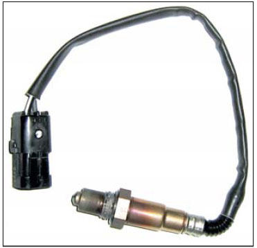
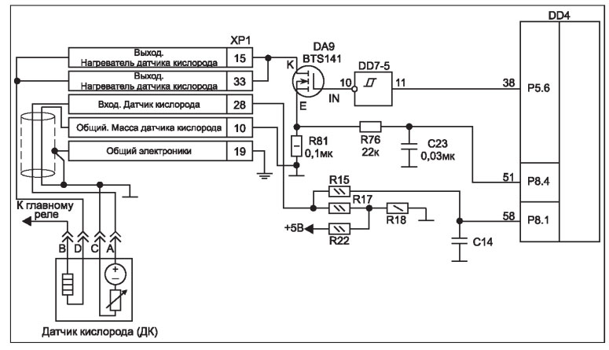
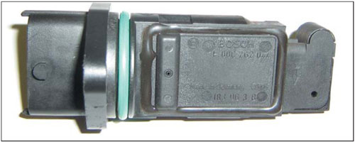
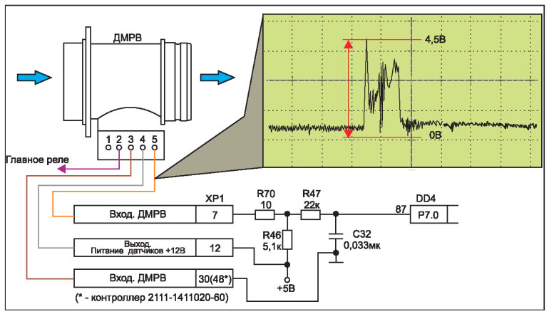
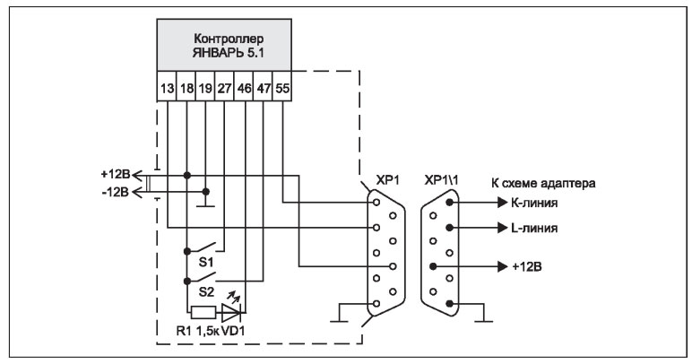

Устройство и ремонт электронных узлов системы зажигания инжекторных двигателей
Датчик кислорода
Датчик кислорода (ДК) установлен в нижней части приемной трубы, он работает совместно с нейтрализатором.
Чувствительный элемент датчика находится непосредственно в потоке отработанных газов. ДК формирует напряжение от 50 до 855 мВ в зависимости от содержания кислорода в отработанных газах.

Рис. 7. Внешний вид датчика кислорода
Внешний вид датчика кислорода показан на рис. 7, а на рис. 8 показан фрагмент схемы подключения ДК к контроллеру. В состав датчика входят измеряющий чувствительный элемент и нагреватель.
Нагреватель служит для быстрого прогрева чувствительного элемента после запуска двигателя. Температура нагрева, при котором эффективность работы ДК повышается, составляет около 300°С.
При нагреве датчика он вырабатывает напряжение в пределах от 300 до 600 мВ и выше.
Во время изменения напряжения контроллер реагирует на то, что датчик прогрелся и готов к работе.
Сигнал с чувствительного элемента датчика поступает на соединитель ХР1 контроллера и далее через резистивный делитель R15 R17 R18 на выв. 58 DD4. Одновременно на чувствительный элемент датчика в холодном состоянии подается опорное напряжение около 450 мВ.

Рис. 8. Схема подключения ДК к контроллеру
На контакт В нагревателя датчика подается напряжение 12,5 В с контактов главного реле (см. рис. 8). На контакт D подогревателя датчика кислорода подключается "земля" через ключ (полевой транзистор DA9 типа BTS 141), который управляется сигналом с выв. 38 микроконтроллера DD4.
Работа инжекторного двигателя обеспечивается в двух режимах:
"Открытый контур" - работа двигателя в холодном состоянии или на холостом ходу (выходное напряжение ДК находится в пределах от 300 до 580 мВ), контроллер производит расчет длительности импульсов впрыска без учета данных ДК.
"Закрытый контур" - двигатель и ДК прогреты до рабочей температуры, контроллер анализирует данные с ДК для поддержания соотношения "воздух/топливо" 14,7/1 (выходное напряжение ДК
находится в пределах от 50...180 мВ до 680...850 мВ). При этом низкий уровень напряжения характеризует наличие кислорода в отработанных газах(бедная смесь), а высокий уровень говорит об отсутствии или низком содержании кислорода (богатая смесь).
В автомобилях с двигателем, изготовленным под нормы токсичности Евро-3, используется два датчика кислорода - управляющий и диагностический.
Нестабильность в работе датчика кислорода (или полное отсутствие сигнала на его выходе) может быть связано как с неисправностью самого ДК, так и с внешними факторами.
Причины отказов ДК могут быть вызваны некачественным топливом, попаданием в камеру сгорания паров охлаждающей жидкости, моторного масла, перегревом или проблемами с электрооборудованием автомобиля.
Проверить датчик кислорода можно с помощью осциллографа или обычного мультиметра.
Во время проверки работы датчика, следует отсоединить колодку от ДК, включить зажигание и измерить напряжение на контакте "А" колодки, оно должно быть равно 450 мВ. Если напряжение в норме, следует заменить ДК (неисправен чувствительный элемент). При отсутствии напряжения на указанном контакте проверяют цепь между конт. "А" и конт 28 соединителя ХР1 (зажигание выключено, соединитель ХР1 отключен от контроллера). При отсутствии неисправности в данной цепи проверяют контроллер или заменяют его (данные неисправности соответствуют кодам Р0130 - неверный сигнал при работе ДК, Р0131 - низкий уровень сигнала ДК, Р0132 - высокий уровень сигнала ДК).

Рис. 9. Внешний вид измерительного элемента BOSCH ДМРВ
Поиск неисправности в цепи управления подогревателя датчика кислорода (код Р0135) начинают с проверки самого ДК. Отключают колодку ДК, проверяют отсутствие обрыва подогревателя, подключив омметр между контактами "В" и "D", сопротивление при этом
должно быть в пределах от 15 до 20 Ом (в зависимости от модели ДК).
Проверяют присутствие напряжения на контакте "D" колодки ДК.
Неисправность ДК может быть вызвана также замыканием на "массу" в цепи между контактами "D" колодки ДК и контактами 15 и 33 соединителя ХР1 контроллера. Как правило, данная неисправность может быть вызвана замыканием подогревателя ДК на "массу".
Последствия данной неисправности могут быть разнообразные: выход из строя ДК и его цепей, а также ЭБУ (выход из строя транзистора DA9, резистора R81, микросхемы DD7-5, микроконтроллера DD4).
Датчик массового расхода воздуха
Датчик расхода воздуха (ДМРВ) служит для измерения количества расходуемого двигателем воздуха.
Он устанавливается на автомобиле в разрыв между воздушным фильтрующим элементом и дроссельным патрубком. Показания ДМРВ являются одним из главных параметров, используемых контроллером для управления работой системы зажигания двигателя.
Датчик выполнен в виде патрубка из пластмассы со съемным измерительным элементом. Внешний вид измерительного элемента фирмы BOSCH показан на рис. 9, а на рис. 10 схема подключения ДМРВ к контроллеру с примером осциллограммы в момент резкого открытия дроссельной заслонки.

Рис. 10. Схема подключения ДМРВ к контроллеру
ДМРВ формирует постоянное напряжение в диапазоне от 1 до 5 В,значение которого зависит от объема проходящего через него воздуха.
За время выпуска автомобилей семейства ВАЗ завод комплектовал автомобили ДМРВ фирм GM (диаметр отверстия 86 мм), BOSCH (диаметр отверстия 74 мм) и Siemens. Датчики указанных фирм не взаимозаменяемые.
Неисправности ДМРВ, как правило, приводят к сбоям в работе двигателя - затрудненному пуску, провалам, рывкам и т.п. Отметим, что неверное вычисление контроллером количества воздуха, расходуемого при работе двигателя, приводит к отказам других элементов системы зажигания двигателя.
Следует учесть, что ДМРВ относится к неремонтируемым и необслуживаемым изделиям. При выходе из строя он требует замены (коды ошибок ДМРВ: Р0102 - низкий уровень сигнала, Р0103 - высокий уровень сигнала).
Причиной одного из распространенных отказов ДМРВ может быть попадание на чувствительный элемент датчика масла из системы вентиляции картера двигателя.
Исполнительные элементы системы зажигания
На рис. 11 приведен фрагмент схемы подключения к контроллеру исполнительных элементов системы зажигания инжекторного двигателя. Перечислим основные элементы: модуль зажигания, система топливоподачи (электробензонасос, форсунки, реле электробензонасоса), контрольная лампа "CHECK ENGINE" и датчик положения коленчатого вала.
Рис. 11. Схема подключения к контроллеру исполнительных элементов системы зажигания двигателя
Исполнительные элементы системы зажигания управляются микроконтроллером DD4.
Работу модуля зажигания по двум каналам (1/4 и 2/3 цилиндры) обеспечивает микросхема DA3 типа TPS 2814D. Сформированные импульсы с выв. 7 (1/4 цилиндры) и выв. 5 (2/3 цилиндры) микросхемы через контакты 1 и 20 соединителя ХР1 поступают на схему формирования высокого напряжения модуля зажигания.
В состав схемы обеспечения подачи топлива входят электробензонасос (ЭБН), реле электробензонасоса и форсунки.
Электробензонасос - турбинного типа, в его состав также входит датчик уровня топлива. ЭБН установлен в топливном баке и управляется микросхемой DA6 типа HIP 0045 (выв. 15) через буферное реле. Микросхема также управляет главным реле и реле вентилятора охлаждения.
При включении зажигания контроллер включает ЭБН на несколько секунд, при этом создается необходимое давление топлива в рампе форсунок (до 650 кПа).
Форсунки установлены одной частью своей конструкции в рампу, а другой - в отверстия впускной трубы. Конструкция форсунки и системы зажигания представляет собой обычный электромагнитный клапан, который управляется контроллером.
Последовательность работы форсунок определяется ЭБУ. В табл. 1 приведена последовательность работы форсунок, в зависимости от типа контроллера.
Таблица 1
|
Тип контроллера |
Порядок работы форсунок |
|
BOSCH M1.5.4.N Январь 5.1 VS 5.1 |
Попеременный синхронный впрыск, включение попарное (1/4 и 2/3 цилиндры) |
|
BOSCH M1.5.4 Январь 5.1 VS 5.1 (2111-1411020-72) |
Одновременный впрыск, включение через каждые 360° поворота коленчатого вала |
|
BOSCH M1.5.4.N (2112-1411020-40) Январь 5.1 (2112-1411020-41) Январь 1.5.4 Январь 5.1.2 BOSCH MP7.OH |
Последовательный впрыск, с включением через каждые 180° поворота коленчатого вала (1-3-4-2) |
Неисправности исполнительных элементов системы зажигания условно можно разделить на отказы механической части системы топ-ливоподачи и отказы, связанные с электронной частью.
Остановимся более подробно на отказах электронной части.
Типовым отказом является отсутствие запуска двигателя при прокручивании коленчатого вала.
После проверки работы системы топливоподачи проверяют целостность всех предохранителей,качество соединения жгута системы зажигания с исполнительными элементами, механизмами и датчиками.
Отсоединяют колодку жгута проводов форсунок и проверяют на клеммах "B, F, C, G" относительно клеммы "F" сопротивление обмоток электромагнитного клапана форсунок, которое должно быть в пределах от 10 до 15 Ом.
Поочередно проверяют пробником на каждой из форсунок наличие управляющего сигнала с контроллера. Проверяют работоспособность модуля зажигания методом проверки/замены высоковольтных проводов и свечей зажигания.
Омметром проверяют на обрыв и замыкание цепь между контактами 1, 20 соединителя ХР1 ЭБУ и контактами "В", "А" колодки модуля зажигания соответственно. При исправных цепях следует заменить ЭБУ.
Также следует проверить работу датчика коленчатого вала (сопротивление датчика должно быть от 550 до 750 Ом), расстояние от вершины зубцов на шкиве коленчатого вала до рабочей части датчика должно составлять 1±0,4 мм.
Ремонт и программирование контроллера
Для диагностики неисправностей электронной части системы зажигания современных автомобилей. Специалисты, как правило, используют специализированные электронные приборы - сканеры, диагностические тестеры и т.д. Их подключают к диагностическим колодкам автомобиля, обеспечивая тем самым оперативное обнаружение неисправностей по кодам ошибок и определение дефектного узла. После устранения неисправности с помощью этих же приборов необходимо стереть из памяти контроллера коды ошибок.
В электронной части системы зажигания автомобиля ЭБУ считается самым надежным узлом. Как правило, он выходит из строя из-за внешних факторов - нарушения герметичности и попадания влаги внутрь конструкции, отказа исполнительных устройств и датчиков, замыкания и изменение полярности питания.
Выявление неисправностей и ремонт ЭБУ следует проводить в стационарных условиях.
Большинство контроллеров, которые устанавливаются на отечественные автомобили, имеют одинаковую элементную базу, отличаются лишь типы микроконтроллеров и Flash-памяти.
В табл. 2 приведены данные по указанным элементам для наиболее распространенных типов ЭБУ.
Таблица 2
|
Тип контроллера |
Микрокон троллер |
Память |
|
VS 5.1 МИКАС 7.1 |
С509 |
24С04 (ЭСППЗУ) |
|
BOSCH MP7.0H |
В58590 |
29F200 (Flash-память) |
|
BOSCH M 7.9.7 |
В59759 |
29F400 (Flash-память) |
Программирование контроллера Январь 5.1 может выполняться как на автомобиле, так и в автономном режиме.
Для проведения работ по программированию следует иметь в распоряжении ПК (желательно, ноутбук), оснащенный специальным программным обеспечением, эталонные прошивки микросхемы Flash-памяти контроллера, адап
тер (переходное согласующее устройство между контроллером и ПК) и технологические приспособления, которые позволяют произвести данные работы.
К технологическим приспособлениям относятся всевозможные соединители, которые в своем составе, как правило, имеют разъем контроллера, индикаторы и управление по переводу контроллера в режим программирования.
На рис. 12 показана принципиальная схема одного из таких технологических приспособлений.

Рис. 12. Схема адаптера для программирования контроллера с ПК
Данная схема позволяет произвести автономное программирование контроллера(без автомобиля).
Выключатели S1 и S2 переключают контроллер в режим программирования, светодиод VD1 индицирует включение режима программирования.
Для программирования контроллера потребуется произвести следующие работы:
- разобрать соединитель ЭБУ;
- припаять к выв. 47 провод и подключить его через выключатель к +12 В;
- собрать соединитель ЭБУ;
- при отсутствии в составе системы зажигания автомобиля блока управления АПС соединить контакты 9 и 18 на колодке ЭБУ;
- подключить через адаптер ПК к диагностической колодке автомобиля и начать программирование, результат перевода контроллера в режим программирования будет свидетельствовать об отсутствии работы ЭБН.